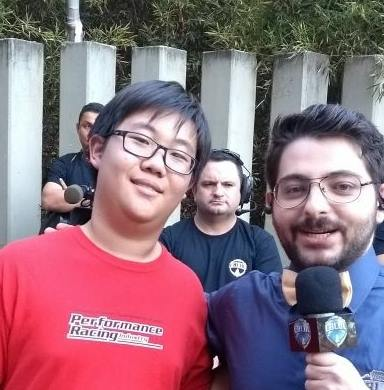

Fotos
Historia
Informaçoes dos Criadores:
MAPA C2
×
Criadores:

idade: 17
Nome completo:Tito li an chen
Instituiçao de Ensino:Cefet-MG
Curso:Redes de Computadores
idade: 16
Nome completo:Walisson Mendes Machado
Instituiçao de Ensino:Cefet-MG
Curso:Redes de Computadores